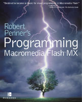

|  The book on Amazon ($28) Download the source files |
Nov
5 2002 Ultrashock has set up a discussion forum devoted to the book--a place to discuss book examples and concepts and ask me questions. |
|
"Robert
Penner's Programming Flash MX gives Flash developers the foundational
best-practice OOP examples they've been craving for years. New and experienced
OOP programmers alike will appreciate Penner's reassuring hand. Destined
to become a classic for visual programming in Macromedia Flash."
|